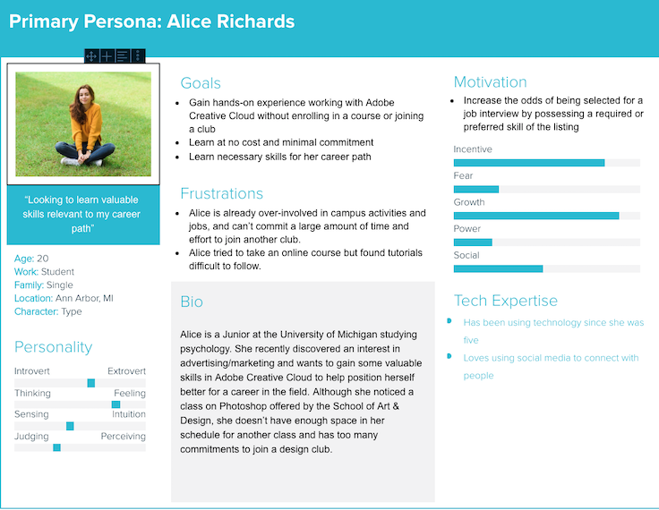
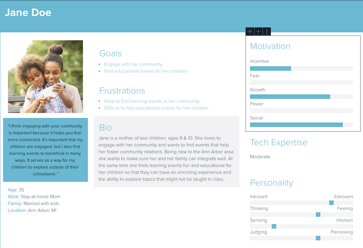
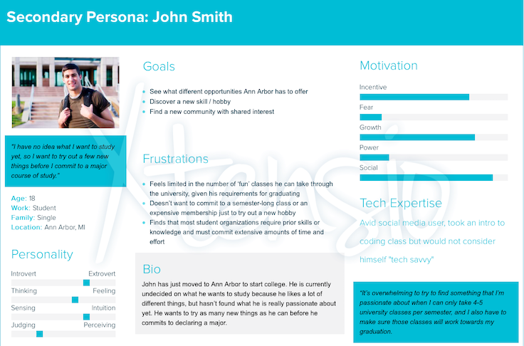
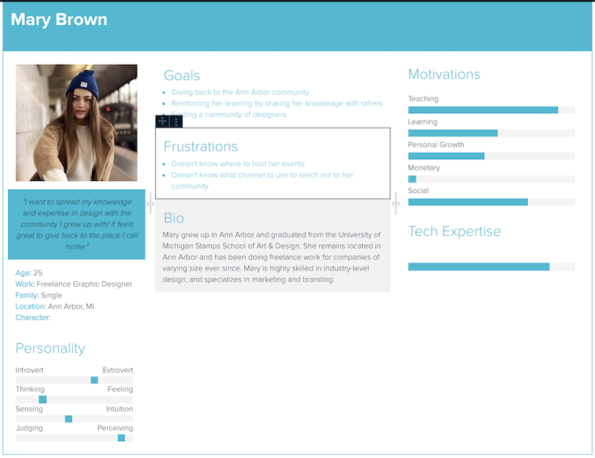
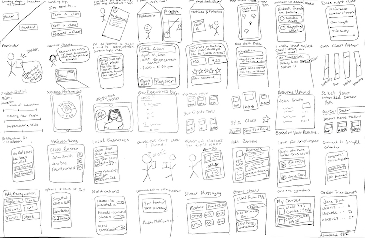
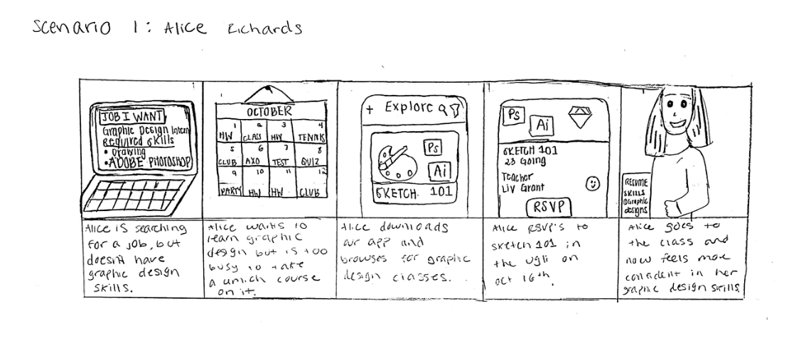
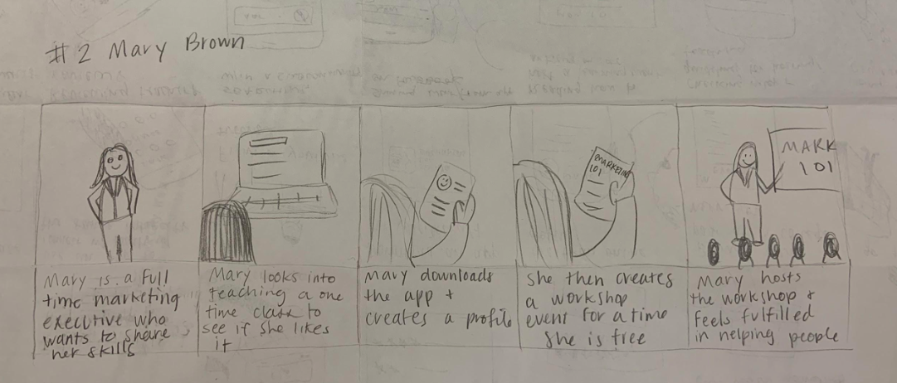
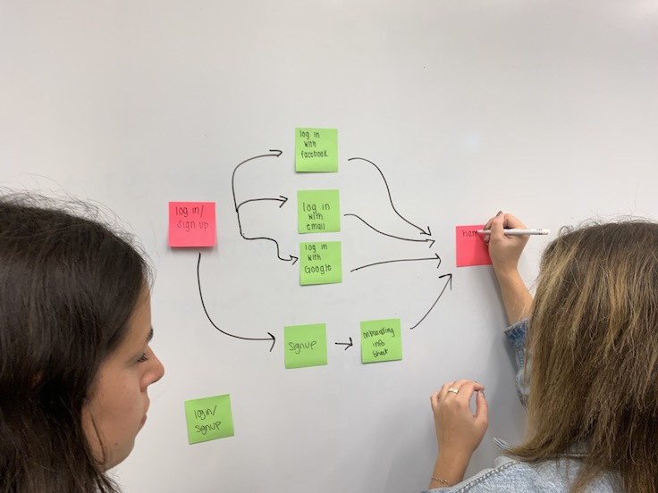
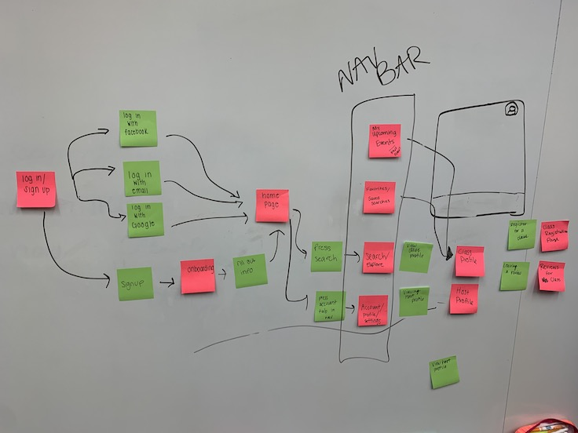

Client
Client
UMSI Project
 Role
Role
UX Designer (Team of 5)
 Duration
Duration
Fall 2019
Skills: UX Design, Persona Creation, Storyboarding, Sketching, Wireframing, Paper Prototyping, Digital Prototyping
Tools: Figma, iMovie, Pen & Paper
Problem:
University of Michigan students have difficulty exploring interests outside of their college curriculum because there is no centralized resource for learning outside of regular courses. When students start college, they must choose a specific path or major to center their studies around. While it is important to become well-educated in a field that a student intends to pursue a career in, this often leaves little time to explore other interests or develop other skills that are unrelated to their major. This is an interaction design problem because it can be solved by connecting communities that offer classes and seminars with students who are interested in taking them through a centralized platform.
The first step in solving this problem was identifying the type of person affected by the problem. This involved researching the types of people that struggled with learning new skills in a low-stakes setting. After talking with fellow classmates about their struggles, my group and I created four personas to represent the various user types for our product.
Personas:




To build off these personas, we decided to scope out the specific situations in which these users would actually use a product to find free classes around Ann Arbor. We found that, while some users might have a specific skill they want to find a class on, others might simply want to explore their options to see what the possibilities for learning are. Additionally, some professionals or students in the Ann Arbor area could be interested in hosting a class because they are passionate about sharing their field with students who are excited about learning. With these in mind, we created two scenarios that our product could be used for.
Scenarios:
Mary Brown is an expert in marketing and branding and lives in Ann Arbor. She loves sharing her knowledge of industry tools with students and other interested people in the Ann Arbor area. Her goal is to teach people how to use these tools so that they can be successful in the coursework or in their jobs. Mary loves giving back to the Ann Arbor community to reinforce her learning by teaching others how to use tools. Mary does not have a lot of free time because she has a job but would like to hold classes randomly throughout the year. She creates a profile for her workshop on the Classify app, describing exactly what she plans on teaching during the class. She only lists one date because she is not sure when she will have more time to hold additional classes, but she saves the class profile so that she can add more in the future if it goes well. The application posts her class profile on the site and allows people who are interested in learning marketing and branding to easily search for and find her class. Mary can view how many people have signed up for her class through the app, and she is able to successfully prepare for and hold her class because she reached people in the community that wanted to learn.
Alice just got back to campus at the University of Michigan to start off her Junior Year as a psychology major. This summer, she interned at an advertising agency which helped her spark an interest in creativity. Often times, Alice had been tasked with creating designs on Photoshop at her internship and she felt unprepared and unknowledgeable about the software. Alice has just begun to apply to internships for the upcoming summer, and noticed that most of the positions she has expressed interest in prefer candidates with experience in Adobe Creative Cloud. Panicked, Alice looks for opportunities to expand her design software skills. Alice already has a full 16 credit course load, serves as the VP of Recruitment of her sorority, and has a job photographing for her school newspaper. She cannot afford a reputable online course as she is already paying her rent and taking out loans to pay tuition. Alice uses the Classify app to find a free minicourse on Photoshop taking place right on campus, taught by a local Ann Arbor graphic designer.
These scenarios not only communicated the types of use cases that our product should allow, but they also made sure that everyone on the team was on the same page for who we were designing for. Quite often, design decisions were resolved by looking back at who we were making the product for and how they would be using it.
Our next step was to start sketching out design ideas. I created 40 sketches on my own of various elements of the final product, without a specific avenue in mind. Some of my sketches solved our problem with an app, some solved it with a website, and others solved it with no digital technology at all. I also sketched some screen formats and use cases to demonstrate what it might look like for someone to actually use our product.
Sketches:
With our sketches in hand, my team and I tried to build off of our scenarios by sketching storyboards to represent how our personas could use our product to solve their problem. This involved combining many of the elements we had already created, and we found that our sketches covered a wide enough scope that we were able to piece together two stories from them.
Storyboards:
The first storyboard goes through the scenario of our persona, Alice Richards, wanting to gain some graphic design skills despite having a very full schedule. She downloads our application and browses a few graphic design classes, registering for one that fits into her schedule. She attends the class and is able to use the skills she learned to find a job.

The second storyboard mirrors the scenario where Mary Brown hosts a class on marketing. She is a different type of user, a professional in Ann Arbor, who contributes to the application by hosting a class on the skills that she uses in her career. She is able to host a single class that fits into her schedule without having to commit to teaching multiple times, and she finds that she enjoys teaching students who are really interested.

After describing how the product would be used in real-world scenarios, we decided to map our how a user would go about accomplishing their goal using our application. Since we chose to create a mobile application, we decided to create a centralized navigation bar with pages for exploring and searching new classes, your personal schedule of classes you are hosting or attending, an option to create a new class, and your personal profile. We build off of these four main pages based on the functionality necessary to accomplish the scenarios we created.
User Flows:


We then translated the user flow into wireframes to see what information would need to be displayed on each screen and what functionality would need to be created. This took quite a few iterations as well we usability testing to make sure our decisions were intuitive and useful to the people that would be using the application.
Wireframes


With the wireframes mapped out and initial usability testing completed, we got to focus on the UI of our product. This involved choosing a color scheme, fonts, and style guide to make sure our application had uniformity and flow. We decided to go with purple as our main color because it represents creativity, and we chose an easily legible font because there can be quite a bit of text on some screens. We also completed more usability testing with both paper and digital prototypes of these high-fidelity screens to make sure that the UI was usable and aesthetically pleasing.
High Fidelity Screens

Finally, we created a digital prototype using Figma to demonstrate the core functionality of our final product. In doing so, we again looked back at our scenarios to make sure we covered the most important features that our users would need. We also wanted to demonstrate the continuity of our UI by moving through the screens and illustrating their functionality.
Prototype
Solution:
Connect students looking to explore new skills with professionals and other students that are passionate about sharing their knowledge.